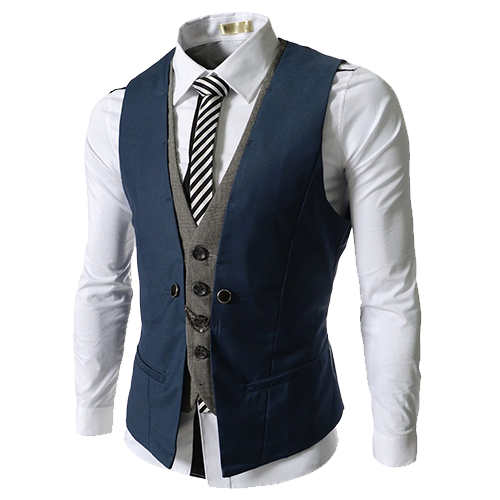
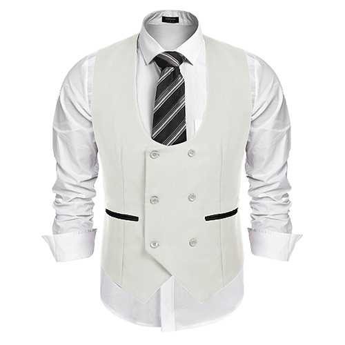

Sastre principal de Burberry desde hace mas de 7 años , creadora de una de las mejores lineas de trajes para hombre masculinos
Productos



Establecida en 2010 en un pequeño cobertizo en Shoreditch Londres, el viaje de Lyst comenzó cuando los fundadores Chris Morton y Seb Trepca se propusieron crear una forma para que las personas encontraran la moda que siempre quisieron. Ahora, la plataforma de búsqueda de moda más grande del mundo, Lyst, le permite buscar en miles de tiendas de moda en línea a la vez, reuniendo 5 millones de productos de 12.000 de las principales marcas y minoristas del mundo en un solo lugar.
Es la misma alegría que recorre la colección, una exploración más profunda del léxico familiar de ETRO. Las imágenes guiñan intencionalmente la forma en que íbamos a definir nuestra forma de ser. Si los grabados, pero también los accesorios, son una antología de archivo, con nombres imaginativos como Bandiere da Parata, I fiori del Cielo o L’Albero delle Meraviglie, las imágenes son un homenaje evidente a una década quizás más desenfadada.

La historia de Hugo Boss comienza en 1923, año en que el modista fundó un pequeño taller de sastrería en Metzingen, un pueblo al sur de Stuttgart. Allí, como afirma el historiador y periodista Jesús Hernández en su libro 100 Historias secretas de la Segunda Guerra Mundial (el cual presenta en su blog), el sastre se dio cuenta de que el negocio era vestir a las tropas hitlerianas.
Hay ciertos productos básicos que deberían formar la base del guardarropa de todo hombre. Desde la camiseta blanca perfecta de nuestra marca interna Mr P., los chinos de NN07 y los mocasines de Gucci hasta un reloj Cartier clásico, estos son los componentes básicos de un estilo simple y atemporal.

Thomas Burberry inventa la gabardina, la tela transpirable, resistente a la intemperie y resistente que revoluciona la ropa para la lluvia, que hasta entonces solía ser pesada e incómoda de usar. La gabardina fue patentada en 1888.
Sastre principal de Burberry desde hace mas de 7 años , creadora de una de las mejores lineas de trajes para hombre masculinos
El mejor Sastre de Hugo Boss un de las mas antiguas santrerias y con mayor prestigio , Marcus aprendio de su padre el cual tambien fue un sastre.